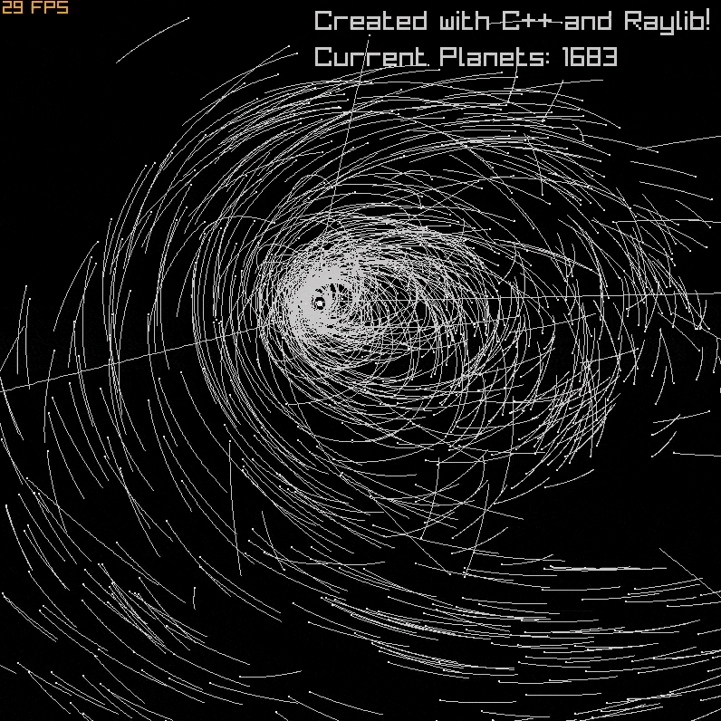
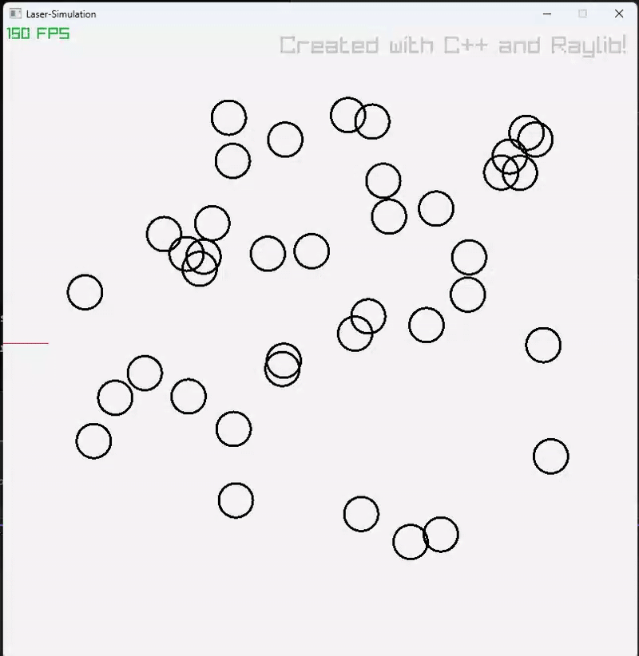
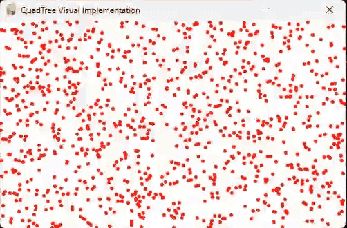

A gravitational N-body simulation using the Barnes-Hut algorithm and quadtrees for efficient clustering.

2D reflection-based ray simulation with dynamic surfaces and angle tracking using real-time rendering.

Visual debugging tool for spatial partitioning and hierarchical sector subdivision in physics simulations.
Jan 2025
I gained hands-on experience in full-stack development within a professional environment, utilizing Microsoft PowerApps, SharePoint, and Power Automate to integrate databases and automate workflows. Stylized automated PDFs were produced using HTML and CSS, while Database Report Generations (DRGs) were optimized through SharePoint Lists and Power Automate. These efforts improved data accessibility, reduced manual workloads, and strengthened cross-functional communication across the organization.
Jun 2024 – Aug 2024
During my internship, I developed applications and automations that streamlined executive information exchange and enhanced organizational efficiency. Meetings were led with stakeholders to define feature expectations, provide real-time updates, and maintain project alignment. Clear, evergreen documentation was created and maintained to support ongoing development and scalability.
Gained foundational knowledge of network infrastructures, protocols, and topologies. Demonstrated understanding of IP addressing, subnetting, and common networking devices used in enterprise environments.
Acquired core skills in Windows OS configuration, maintenance, and troubleshooting. Learned user and file management, system security, and how to maintain reliable desktop environments in a professional setting.
Validated comprehensive understanding of essential computer concepts, digital communication, and productivity tools. Demonstrated proficiency with standard office applications, online safety, and the fundamentals of computing.